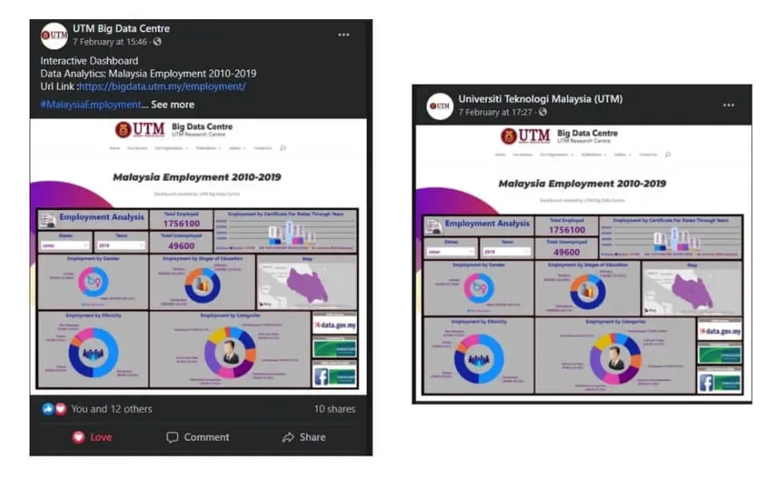

Education Impact Analysis
Project Information
- Category: Research & Data Analysis
- Client: UTM Big Data Centre
- Tools: Power BI, Excel
- Dataset: Data.gov.my (2010-2019)
- Focus: Education & Employability
Key Questions
- How does education impact employability?
- What are the employment trends by gender?
- Which job sectors are most popular?
- Which state has the highest employment?
The Impact of Education on Employment in Malaysia
A comprehensive analysis of employment trends from 2010 to 2019, identifying the correlation between education levels and employability rates.
Interactive Power BI Dashboard
Methodology (APP-SA)
1. Ask & Prepare
Defined key questions regarding employability. Gathered data from data.gov.my using Excel for initial storage.
2. Process & Analyze
Cleaned and validated data to ensure accuracy. Consolidated multiple datasets into Power BI for holistic analysis.
Key Insights (2010-2019)
- Workforce: ~13.7 Million Employed vs. ~8.8 Million Unemployed.
- Education: Individuals with at least an SPM certification showed significantly higher employability.
- Gender Gap: Males represented 62.35% of the workforce.
- Demographics: Bumiputera individuals led in employment rates. Non-Malaysians made up ~14.5% of the workforce.
- Top Sectors: Service and Sales occupations were the most dominant.
Conclusion & Recognition
This project successfully established a data-driven correlation between higher education and employability in Malaysia. The dashboard provided clear answers to stakeholder queries, facilitating evidence-based decision-making for policy recommendations.
